Lecture 4 · Basic data analytic techniques¶
Regression · Classification · Clustering · Supervised vs. unsupervised
LECTURE 4 · 方法地图
阅读说明
本讲义按原课件逐页整理：英文条目为课件原文，其下附中文对照；图表、数据表截图与示意图页附原课件整页图片。课件中的红/蓝字课堂批注整理为「课堂批注」引用框。课件第 1 页为课程封面，未收录。文末附本讲重点词汇表。
1. Warm-up 课堂判断¶
Slide 2 · True or False?¶
Each group should agree on one set of answers.
- Data visualizations are aimed at technical/scientific audiences rather than laypersons.
- Besides distributions and relationships, data visualizations can alert us to the potential need to transform our data before further analysis.
- Histograms and ECDFs convey distributional information that complement each other.
- A scatterplot can visualize comparisons of COVID cases between countries.
- A barplot can visualize the link between COVID cases and GDP per capita across countries.
每组应商定一套答案：① 数据可视化面向技术/科学受众，而不是普通人；② 除分布和关系外，数据可视化还能提醒我们在进一步分析前可能需要变换数据；③ 直方图和 ECDF 传达的分布信息相互补充；④ 散点图可以可视化国家间 COVID 病例的比较；⑤ 柱状图可以可视化各国 COVID 病例与人均 GDP 之间的联系。
课堂批注
答案依次为 False, True, True, False, False。
Slide 3 · Outline¶
- Real life scenarios of DA and machine learning
- Overview of machine learning
- The continuum of supervised to unsupervised learning: regression, classification, clustering
数据分析与机器学习的真实场景；机器学习概览；从有监督到无监督的连续谱——回归、分类、聚类。
2. Real-life scenarios 真实场景¶
Slide 4 · Scenario #1: Education¶
- Outcome(s): effect, result etc. of interest
- Factor(s)/feature(s): things that (may) influence outcome(s)
- Potential features and outcomes?
- How to quickly gauge?
- Why are they interesting from an education point of view?
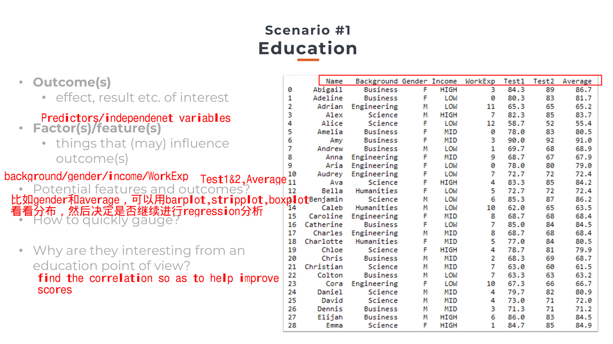
原课件第 4 页：教育场景的数据表与红字批注
结果（outcome）：关注的效应、结果等。因素/特征（factor/feature）：可能影响结果的东西。可能的特征和结果是什么？如何快速把握？从教育角度看，它们为什么有趣？
课堂批注
Outcome＝Test1 & 2, Average；Features＝background / gender / income / WorkExp；这些也是 predictors / independent variables。可以先用 barplot、stripplot、boxplot 看分布，再决定是否继续做 regression；目的是找出相关以帮助提高成绩。
Slide 5 · Scenario #2: Society and politics¶
- Potential features and outcomes?
- How to quickly gauge?
- Why are they interesting from a social/political/economic point of view?
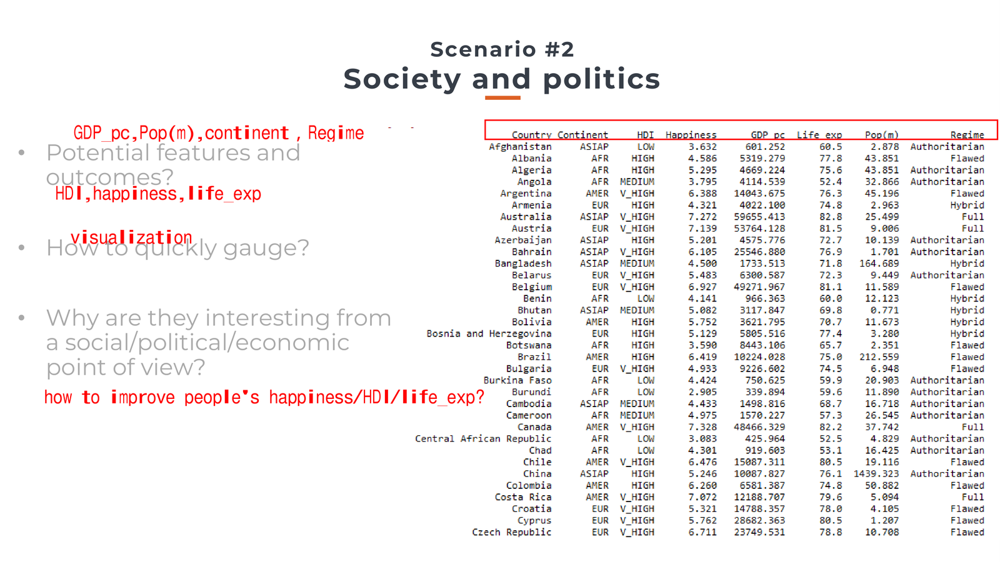
原课件第 5 页：社会与政治场景的数据表与红字批注
可能的特征和结果是什么？如何快速把握？从社会/政治/经济角度看，它们为什么有趣？
课堂批注
Features / outcomes：HDI, happiness, life_exp；GDP_pc, Pop(m), continent, Regime。核心问题是 how to improve people's happiness / HDI / life_exp；可以先用可视化。
Slide 6 · Scenario #3: COVID-19¶
- We now consider a different objective
- Instead of focusing on features/outcomes, we want to group countries based on COVID (dis)similarities
- For what?
- Similar applications in education, society, linguistics?
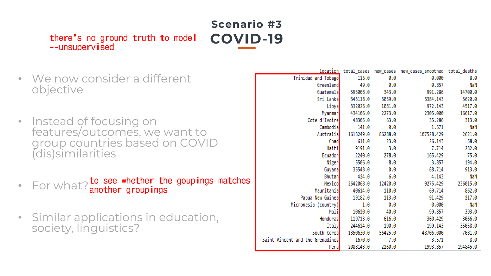
原课件第 6 页：COVID-19 场景的数据表与红字批注
现在考虑一个不同的目标：不关注特征/结果，而是根据 COVID 的（不）相似性给国家分组。为了什么？教育、社会、语言学中有类似应用吗？
课堂批注
看分组是否与另一套分组吻合；没有 ground truth 可建模 → 无监督。也可思考：能否按写作（语料库）聚类？
Slide 7 · Beyond descriptive analytics¶
- In these scenarios, the main objectives were
- to diagnose relationships between factors and outcomes
- to predict new outcomes based on these relationships
- to discover natural groups in our data
- … to act upon the above insights
- We can gain a quick overview with data visualizations
- We can then use data analytic (mostly machine learning) techniques to address the objectives
这些场景的主要目标：① 诊断因素与结果之间的关系；② 基于这些关系预测新结果；③ 发现数据中的自然分组；④ 据此采取行动。
可以先用可视化快速概览，再用数据分析（多为机器学习）技术实现目标。
课堂批注
回顾数据分析四阶段：descriptive, diagnostic, predictive, prescriptive；本页目标属于诊断性分析。
3. Overview of machine learning 机器学习总览¶
Slide 8 · A roadmap of machine learning¶
- Machine learning is itself a key branch of AI
- Branches → general tasks (e.g. regression) → specific algorithms (e.g. linear, lasso)
- We will cover the circled portion
- This will give you a solid foundation to pursue advanced courses
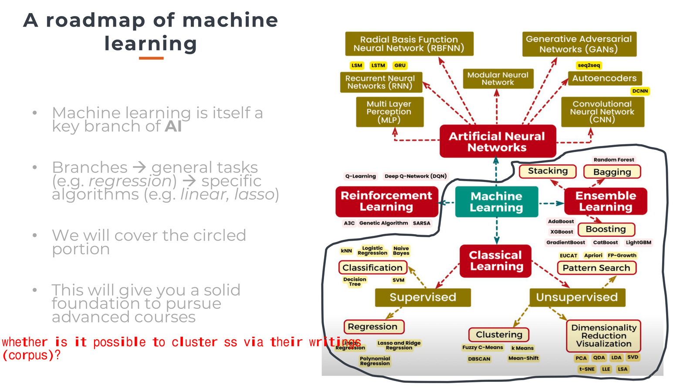
原课件第 8 页：机器学习路线图（本课程覆盖圈出的部分）
机器学习本身是 AI 的关键分支；分支 → 一般任务（如回归）→ 具体算法（如 linear、lasso）。本课程覆盖图中圈出的部分，为进阶课程打下基础。
课堂批注
思考：能否按写作（语料库）对 SS 聚类？
Slide 9 · A basic data analytic workflow¶
- Applies across regression, classification, and clustering
- Explore: prepare the dataset and explore it
- Apply: apply an algorithm to train a ML model
- Evaluate: evaluate/test the resulting model
- Interpret: interpret and use model critically (e.g., for theorization and/or predictions)
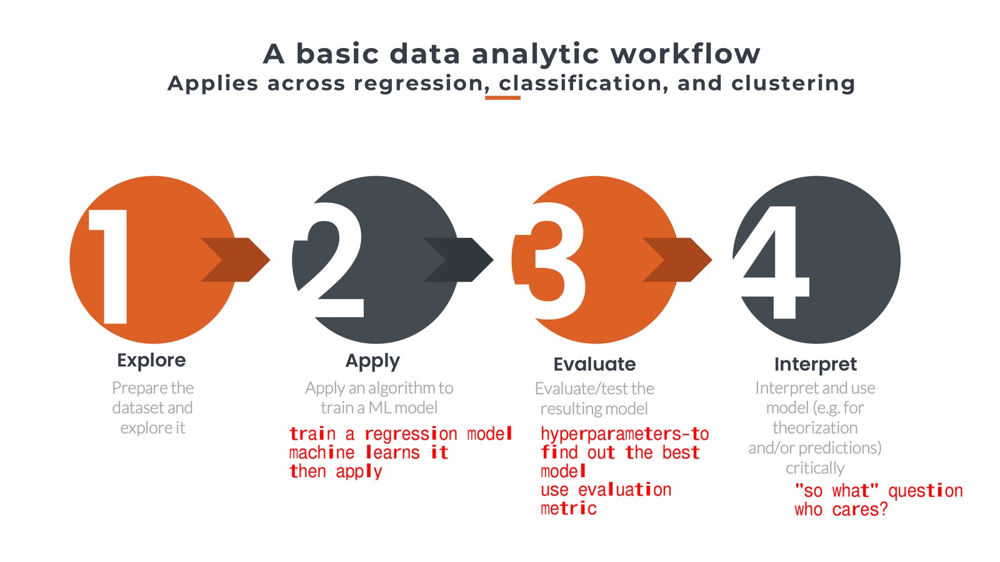
原课件第 9 页：基本数据分析流程（Explore → Apply → Evaluate → Interpret）
该流程适用于回归、分类和聚类：探索——准备数据集并探索；应用——应用算法训练机器学习模型；评估——评估/测试得到的模型；解释——批判性地解释和使用模型（如理论化/预测）。
课堂批注
训练回归模型；机器学会后应用；用超参数找最佳模型；使用评估指标；最后问 “so what”：谁在乎？
4. Regression, classification, clustering 回归、分类与聚类¶
Slide 10 · Regression¶
- To investigate whether outcome(s) systematically vary along with feature(s)
- Features are also called predictors (or more narrowly, independent variables)
- Different algorithms: linear, ridge, lasso, elastic net, polynomial etc.
- Linear regression models are collectively known as the General Linear Model
- \(y = \beta x + \varepsilon\) (outcome = coefficient × predictor + error)
- If the feature(s) change by this much, do the outcome(s) systematically change by that much?
- How accurately can we predict new outcomes based on the above?
研究结果是否随特征系统变化。特征也叫预测变量（更狭义地叫自变量）。不同算法：linear、ridge、lasso、elastic net、polynomial 等；线性回归模型统称一般线性模型。
\(y = \beta x + \varepsilon\)（结果 = 系数 × 预测变量 + 误差）。特征变化这么多，结果是否也系统变化这么多？基于上述关系预测新结果有多准确？
课堂批注
x 轴、y 轴；通常用于控制实验研究，也用于观察性研究；捕捉不同类型的关系。
Slide 11 · Regression: Simple regression, one predictor at a time¶
- A simple regression with one predictor is often not a very good model.
- \(R^2\) is an evaluation metric for linear regression models.
- One categorical predictor with two levels is also a regression—actually a one-way ANOVA.
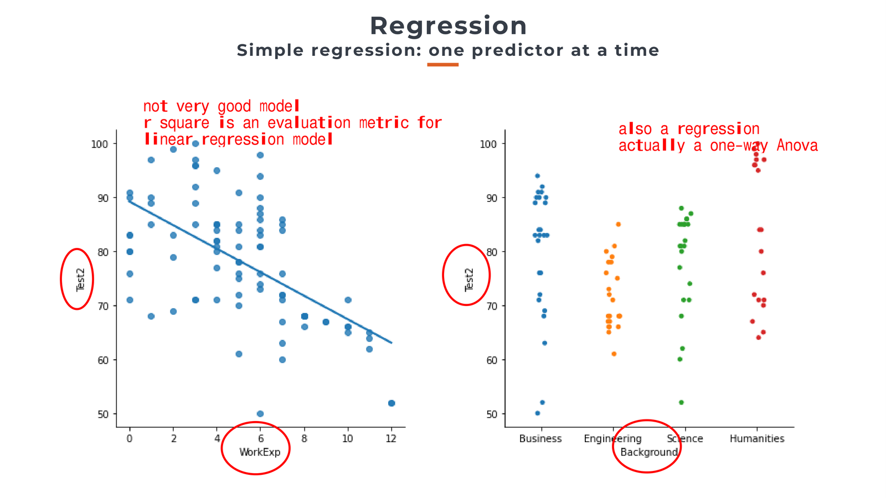
原课件第 11 页：简单线性回归与单分类预测变量回归
只有一个预测变量的简单回归往往不是很好的模型。\(R^2\) 是线性回归模型的评估指标。一个有两个水平的分类预测变量也是回归——实际上是单因素方差分析（one-way ANOVA）。
课堂批注
单预测变量模型往往不够好；\(R^2\) 是线性回归的评估指标；二水平分类预测变量的回归实际上是 one-way ANOVA。
Slide 12 · Regression: Multiple regression, >1 (interacting) predictors¶
- A different slope for each background
- Interaction effect of background and WorkExp, on Test
- The effect of WorkExp on Test differs across backgrounds
- Interaction effect looks weak in this case. How do we know?
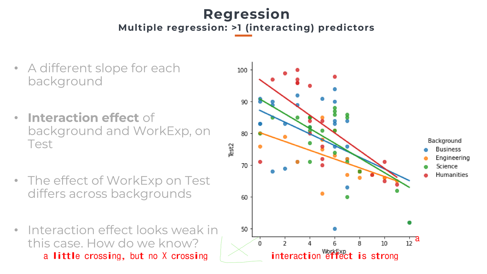
原课件第 12 页：多预测变量与交互效应
每个背景有不同的斜率；背景与 WorkExp 对 Test 存在交互效应；WorkExp 对 Test 的效应因背景而异。本例中交互效应看起来较弱——我们怎么知道？
课堂批注
图中线条略有交叉，但没有明显的 X 形交叉；交互效应强时会出现明显的 X 形交叉。
Slide 13 · Classification¶
- When the outcome is discrete rather than continuous (i.e. a label rather than a numerical value)
- If the feature(s) change by this much, (how likely) does the outcome label change?
- How accurately can we predict new labels based on the above?
- Different algorithms: k-nearest-neighbours (k-NN), logistic regression, support vector machine (SVM), naïve Bayes, decision trees etc.
- Some algorithms can be used for both regression and classification (e.g. decision trees, random forests, k-NN, SVM), though seldom in practice
当结果是离散的而非连续的（即标签而非数值）。特征变化这么多，结果标签（多大概率）会变化？基于上述关系预测新标签有多准确？
不同算法：k 近邻（k-NN）、逻辑回归、支持向量机（SVM）、朴素贝叶斯、决策树等。有些算法既可用于回归也可用于分类（决策树、随机森林、k-NN、SVM），但实践中很少两用。
Slide 14 · Classification: One predictor at a time¶
- Outcome: 0 = Not democratic; 1 = democratic
- Predictor: happiness
- Predicted probability of democracy between 0 and 1, using a logistic curve
- Effect looks weak in this case. How do we know?
- Logistic regression as a probability-based algorithm
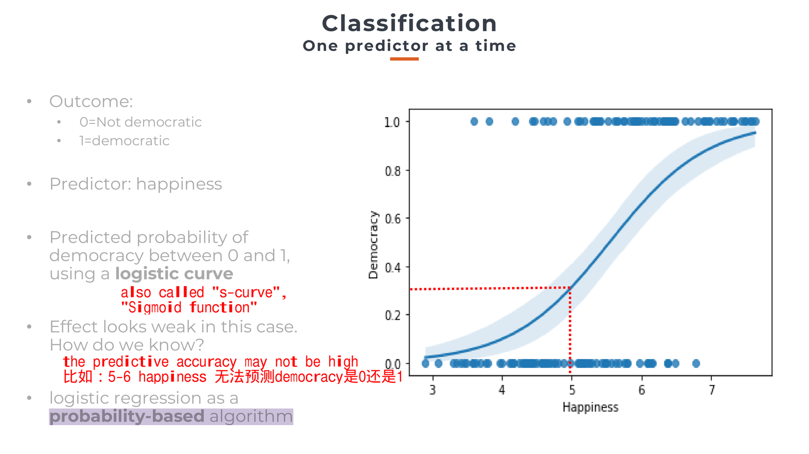
原课件第 14 页：以幸福度预测民主政体的 logistic 曲线
结果：0 = 非民主，1 = 民主。预测变量：幸福度。用逻辑曲线给出 0 到 1 之间的民主概率。本例效应看起来较弱——我们怎么知道？逻辑回归是一种基于概率的算法。
课堂批注
也叫 “s-curve”、“Sigmoid function”；预测准确率可能不高；比如幸福度 5–6 时无法判断民主是 0 还是 1。
Slide 15 · Classification: Multiple features¶
- Using both happiness and GDP_pc to predict if a country is democratic
- k-nearest-neighbours as a spatial algorithm
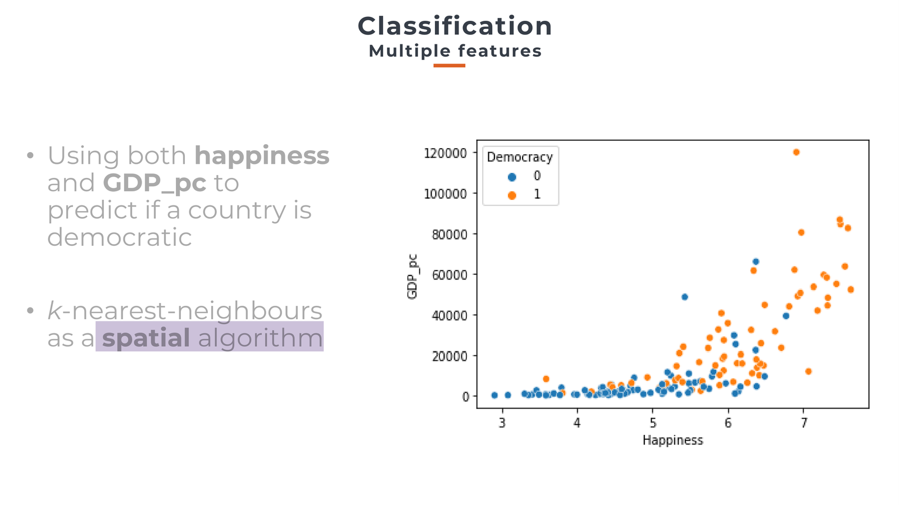
原课件第 15 页：以 happiness 与 GDP_pc 进行 k-NN 分类
同时用幸福度和 GDP_pc 预测一个国家是否民主。k 近邻是一种空间算法。
Slide 16 · Clustering (or cluster analysis)¶
- Used to discover latent categories/groups based on available information (i.e., features)
- These created groups are called clusters
- Members within each cluster are maximally similar to one another
- Clusters are maximally distinct from one another
- Different algorithms: k-means, hierarchical (agglomerative vs. divisive), DBSCAN, spectral etc.
用于根据现有信息（特征）发现潜在类别/分组；生成的组称为簇（clusters）。同一簇内成员彼此最大化相似，不同簇之间最大化不同。
不同算法：k-means、层次聚类（凝聚式 vs 分裂式）、DBSCAN、谱聚类等。
课堂批注
hidden / implicit；用欧氏距离计算距离；不同组不应重叠；层次聚类分 bottom-up / top-down。
Slide 17 · Clustering: K-means¶
- Features: GDP per capita; life expectancy; cases per million; deaths per million, reduced to two dimensions
- Outcomes: three natural groups/clusters
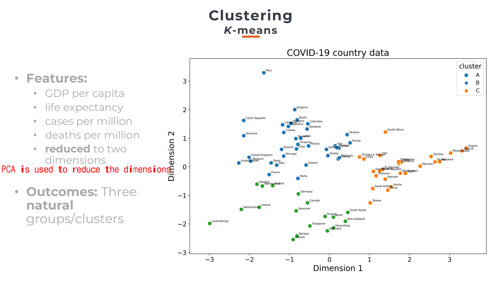
原课件第 17 页：K-means 聚类结果
特征：人均 GDP、预期寿命、每百万病例、每百万死亡，降到二维。结果：三个自然分组/簇。
课堂批注
用 PCA 降维。
Slide 18 · Clustering: Hierarchical¶
- A different algorithm
- Outcome presented in a dendrogram
- Key research area:
- How similar are the results of different algorithms?
- Which algorithm is objectively “best”?
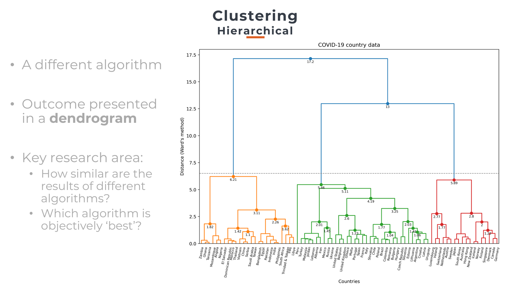
原课件第 18 页：层次聚类的树状图（dendrogram）
一种不同的算法，结果用树状图（dendrogram）呈现。关键研究领域：不同算法的结果有多相似？哪个算法客观地“最好”？
Slide 19 · Supervised vs. unsupervised machine learning¶
- Regression and classification are supervised learning techniques
- we provide both features and outcomes to the machine
- predictions can be evaluated as right/wrong
- Clustering is an unsupervised learning technique
- we only provide features
- no ground truth to evaluate the solution; optimality rather than correctness
回归和分类是有监督学习：同时向机器提供特征和结果，预测可以判断对/错。
聚类是无监督学习：只提供特征，没有 ground truth 评估解，追求最优而非正确。
课堂批注
Z-score；数据已被缩放。
Slide 20 · Supervised ↔ unsupervised learning¶
- Supervised vs. unsupervised is often treated as distinct, but it is more accurate to posit a continuum between fully human-guided and fully machine-guided data analysis
- Examples of mid-points along the continuum
- Applying both in a single study, for different related purposes
- Intrinsically blending supervised and unsupervised learning; e.g. semi-supervised learning
有监督与无监督常被当作二分，但更准确的是把它们看作从完全人工引导到完全机器引导的连续谱。连续谱中间点的例子：① 同一研究中使用两者，服务于不同但相关的目的；② 内在融合有监督与无监督学习，如半监督学习。
文献
El Aissaoui, O., El Alami El Madani, Y., Oughdir, L., & El Allioui, Y. (2019). Combining supervised and unsupervised machine learning algorithms to predict the learners' learning styles. Procedia Computer Science, 148, 87–96.
van Engelen, J. E., & Hoos, H. H. (2020). A survey on semi-supervised learning. Machine Learning, 109(2), 373–440.
Slide 21 · The next three weeks¶
- L5: Regression
- L6: Classification
- L7: Clustering
- Basic theory, code, examples, and practice
L5：回归；L6：分类；L7：聚类。内容包括基础理论、代码、例子和练习。
Slide 22 · Summary¶
- Machine learning is used in the real world to gain insights and solve practical problems
- Techniques lie along a continuum from supervised to unsupervised learning
- Regression, classification, and clustering are the three key techniques we will learn (with some dimensionality reduction and ensemble learning)
- For each of these, we will learn one key algorithm
机器学习在现实世界中用于获得洞察和解决实际问题；技术位于从有监督到无监督的连续谱上；回归、分类和聚类是我们将学习的三大关键技术（还包括一些降维和集成学习）；对每种技术，我们将学习一个关键算法。
课堂批注
集成学习——在多个模型中选择最好的一个。
重点词汇 · Key Vocabulary¶
| English | 中文 | 说明 / 搭配 |
|---|---|---|
| regression | 回归 | 连续结果变量与预测变量的关系 |
| classification | 分类 | 离散/类别结果的预测 |
| clustering | 聚类 | 发现潜在自然分组 |
| supervised learning | 有监督学习 | 特征 + 结果 |
| unsupervised learning | 无监督学习 | 只有特征 |
| feature | 特征 | 可能影响结果的变量 |
| outcome | 结果变量 | 研究关注的效应/结果 |
| interaction effect | 交互效应 | 一个预测变量的效应随另一个变量水平而变 |
| logistic regression | 逻辑回归 | 基于概率的分类算法 |
| k-NN | k 近邻 | 按最近邻居多数投票分类 |
| k-means | K 均值聚类 | 按距离把样本分到 k 个簇 |
| hierarchical clustering | 层次聚类 | 用树状图呈现聚类 |
| PCA | 主成分分析 | 降维方法 |
| hyperparameter | 超参数 | 训练前设定的参数（如 k） |
| workflow | 工作流程 | 探索 → 应用 → 评估 → 解释 |